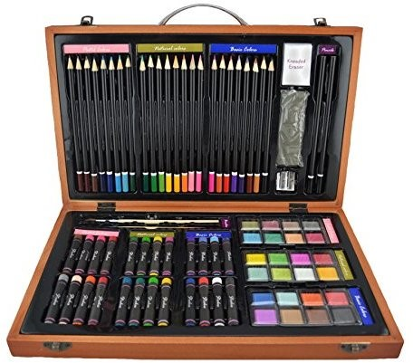

MATERIALES
Seas aficionado o profesional, necesitas unos materiales básicos para empezar con el dibujo técnico o artístico. Tenemos material de dibujo tanto para principiantes como para expertos.
A mayor calidad de tu material para dibujar, mejores resultados obtendrás en tus planos y dibujos arquitectónicos. No te pierdas los organizadores de escritorio para tenerlo todo en orden.

Lápices y Portaminas
Si recién estás empezando en el dibujo quizás no sabes que estos se clasifican por dureza, a mayor dureza menos pigmento dejan sobre el papel y cuanto más blandos son más grafito dejan a su rastro.
Papel y Láminas
De igual modo, necesitas papel de dibujo. Este puedes comprarlo en forma de bloc o por hojas separas.
Hay diferentes gramajes de papel, a mayor peso, mayor grosor. También diferente tacto o rugosidad y papel especial para acuarela o acrílicos.
Portaplanos y Carpetas
Para conocer las mejores ofertas y precios de tubos portaplanos y carpetas de dibujo, visita el siguiente post dedicado en especial a ello.
Reglas de Dibujo Técnico
Además de necesitar un paralex para ayudarte en el dibujo, necesitas de reglas: escalímetro, escuadra, cartabón y transportador, incluso uso del compás.
Rotrings y Rotuladores
Para obtener un resultado más profesional necesitas de rotring y rotuladores. Repasa y colorea tus planos y dibujos con estas herramientas.
ss